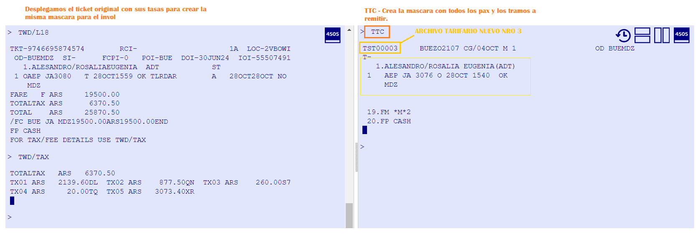

Equipo
Guias de ayuda y usuarios
Vuelos
Remisiones
Devoluciones
Colas
Sugerencias
REMISION INVOL AMADEUS
Desplegamos itinerario y verificamos cambios en el historial
Desplegamos ticket original
Debido a que es un invol, no hay archivo tarifario creado. Vamos a crear la mascara manual

Vamos a cargar todos los componentes de la mascara
A diferencia de Galileo, aca debemos ingresar las tasas originales e indicarle a Amadeus que ya estan pagas
Una vez cargados los componentes firmamos y cerramos
Ahora cargamos los comandos necesarios para la remision
Debemos indicar cual es el ticket que vamos a usar para la remision
Verificamos carga de datos y remitimos